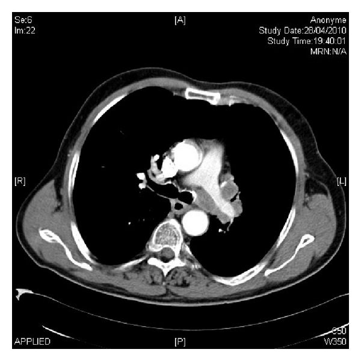

Caso clínico · sem desfecho
Vignette 72 a: LEMS e CaPC
Homem idoso, tabagista, com perda de peso e fraqueza proximal de membros. Quem é: MG ocular pura? AVE espástico? Miopatia com CPK 10.000?
Homem 72 anos, hipertenso, diabético e tabagista, internado por perda ponderal e fraqueza de membros inferiores.
Exame: dificuldade de se levantar do leito; força grau 3 em grupamentos musculares proximais de membros inferiores; hiporreflexia; ptose palpebral.
ENMG: amplitude reduzida do potencial de ação muscular com predomínio proximal dos quatro membros e aumento da amplitude após estímulos repetitivos (padrão incremental).

Laroumagne S et al. Case Rep Med 2014;2014:545490. Licensed under CC BY 3.0. Source: PMC3981168 · DOI 10.1155/2014/545490
72 a · CaPC
A imagem do tórax confirma a hipótese: massa hilar esquerda = carcinoma pulmonar de pequenas células. Tabagismo + perda ponderal + ENMG incremental = LEMS → CaPC.
Board: achados → LEMS → CaPC
- Idade 72 a · tabagista · perda ponderal → perfil paraneoplásico.
- Força grau 3 · proximal · hiporreflexia · ptose → preferência proximal + SNA possível.
- ENMG incremental (amplitude ↑ pós-esforço) → facilitação = LEMS.
- Tórax: massa hilar esquerda = CaPC → fecha o 4º motivo de tórax.
Hiporreflexia não exclui placa
Pegadinha: Hiporreflexia no LEMS não exclui placa: com menos contração, o reflexo pode estar mais fraco — compatível, não "desfaz" a topografia. Ptose no LEMS: a doença pode pegar face; preferência proximal não proíbe achado ocular.
Case-card esquemático 72 a com chips (proximal · grau 3 · hiporreflexia · ptose · incremental).
Quiz
Q1. Homem 72 a tabagista, proximal grau 3, hiporreflexia, ENMG incremental. Diagnóstico:
Gabarito: B. Perfil paraneoplásico + incremental fecha LEMS. Ptose "puxa" MG mas idade/perfil/tipo de ENMG não fecham MG.
Q2. Hiporreflexia no LEMS:
Gabarito: B. Reflexo fraco casa com menos contração. Não desfaz a topografia da placa.
Q3. Neoplasia a procurar nessa vignette:
Gabarito: B. CaPC — carcinoma pulmonar de pequenas células. ~50% dos LEMS têm neoplasia; CaPC é a mais comum.